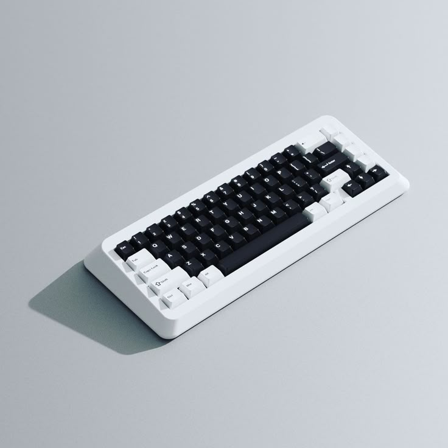

Mechanical Keyboard
The long-term use of mechanical keyboards is well-known. They are perfect for gamers and daily typers. There is a separate mechanical switch underneath each key. Users of this kind of keyboard adore the tactile and auditory feedback that is provided by pressing the keys a bit harder. Additionally, this lessens the chance of inadvertently hitting the incorrect key.
